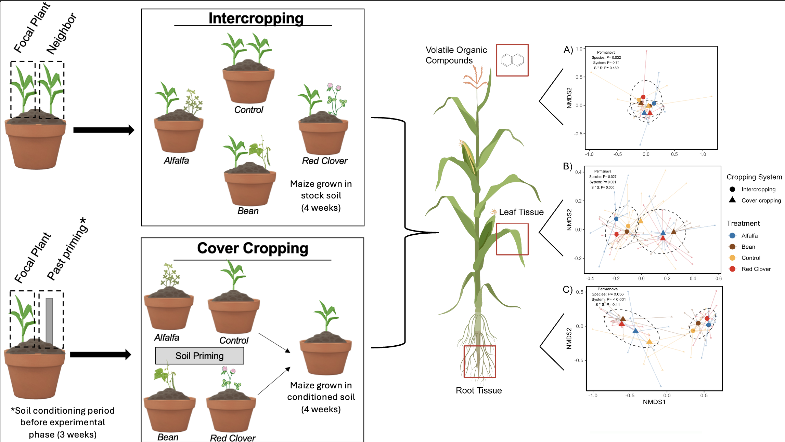
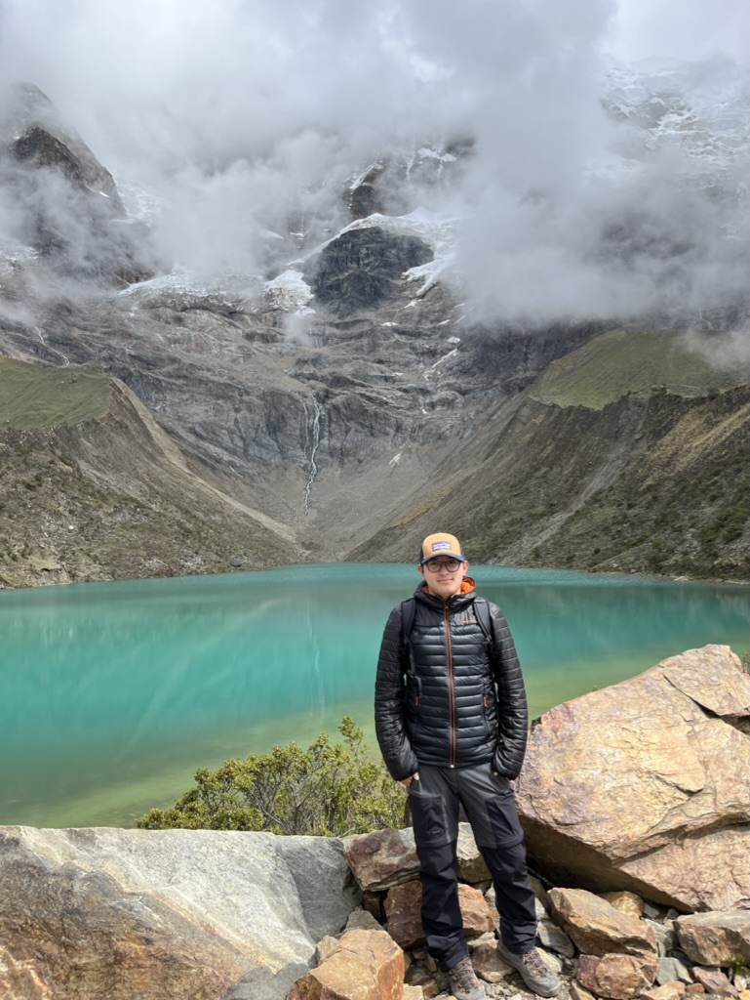

Hi! I'm Juan Pablo Jordán, PhD candidate in the Kessler Lab at Cornell University.
I'm currently based the Department of Ecology and Evolutionary Biology
Ithaca, NY
About Me

I'm an organismal biologist, currently doing a PhD in Ecology and Evolutionary Biology at Cornell University. I was born and raised in Ecuador where I quickly found special interest in the amazing biodiversity around me. I spent most of my undergraduate career chasing neotropical spiders, which took me to conduct fieldwork in the tropical montane forests and the Amazon basin. Recently, I have found new interest in the natural compounds that mediate ecological interactions, which I will be exploring during my first year of graduate school. I am committed to efforts in creating equal opportunity and representation of all groups in science, especially those from developing countries. I strongly believe that diversity is an asset that strengthens our community by the enrichment of various backgrounds, life experiences and points of view.
Research
My resarch interests lie at the intersection between chemical ecology and agroecology. By studying diversified cropping systems, I try to better understand the chemical and ecological mechanisms through which species interactions both above and below ground mediate resistance to herbivores. I also work in naturally-evoling tropical systems to test different hypotheses testing for the maintenance of phytochemical diversity in plants.

Seed chemical treatments impact on soil microbiome

Phytochemical diversity correlates with herbivore interactor diversity in the Andean shrub Baccharis latifolia
Contact
Elementum sem parturient nulla quam placerat viverra mauris non cum elit tempus ullamcorper dolor. Libero rutrum ut lacinia donec curae mus. Eleifend id porttitor ac ultricies lobortis sem nunc orci ridiculus faucibus a consectetur. Porttitor curae mauris urna mi dolor.